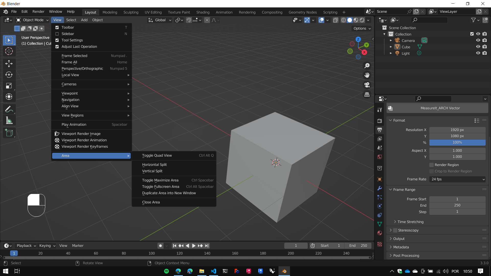
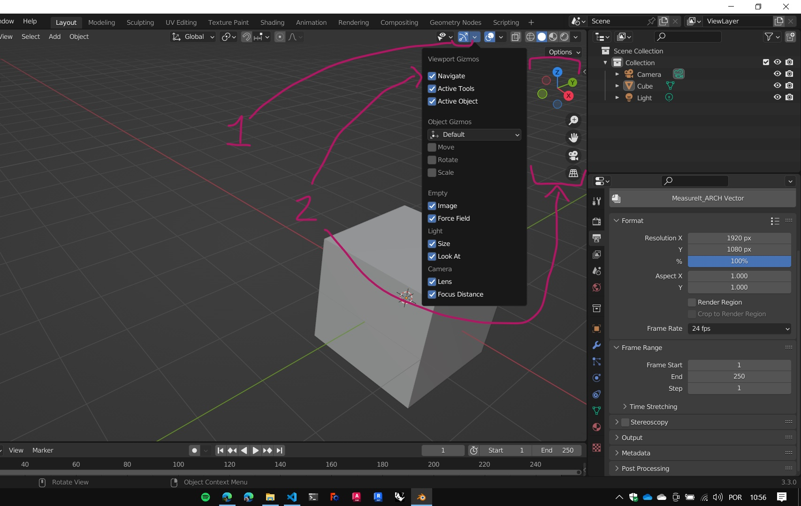
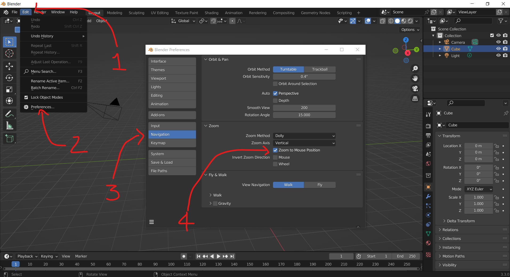

Interface do Blender

- Menu do programa (application menu)
- Workspaces (interface com formato de abas)
- Controles de cena e camadas de visibilidade (Scene and View Layer selection)
- Áreas / Editores
Os Workspaces servem para trocar entre diferentes configurações de Áreas e Editores.
Áreas
Redimensionando Áreas:


Editores
Toda Áreas é ocupada por um editor, que pode ser trocado na caixa de seleção na posição superior esquerda (por padrão) da respectiva área.

-
3D Viewport
-
Outliner
a. View Layer
-
Properties
-
Timeline
O atalho ctrl + space maximiza o editor atual ou retorna para a vista padrão da aba.
Navegação
Atalhos
Zoom: MMB (Rolar)
PAN : SHIFT + MMB (Arrastar)
ORBIT: MMB (Arrastar)
Navigation Gizmo

Configuração modo de Zoom
Para o Zoom centralizar na posição do mouse 
Painéis T e N
Alguns editores possuem pequenas setas nos lados de duas áreas. Menus podem ser abertos clicando e arrastando nas setas, ou pelos atalhos T e N.
Abaixo Vemos a indicação das setas no editor 3d Viewport.

No Lado esquerdo, temos o painel de ferramentas (tools panel) que pode ser visto ou escondido teclando T.

No lado direito temos o painel lateral (Sidebar panel), que pode ser mostrado ou recolhido também pela tecla N(como muitos dos ajustes são numéricos, a equipe do Blender escolheu a tecla N como atalho para este painel)

É comum encontrar estes paineis referidos como T e N nos materiais de informação sobre o blender.
Uma outra versão do painel T pode ser vista pressionando as teclas shift + space.

Uma tabela com botões aparece na posição do ponteiro do mouse, apresentando os mesmos botões do painel de ferramentas.
Modos de Trabalho do Editor 3D Viewport
Os modos de trabalho (object modes podem ser selecionados pela barra superior esquerda do editor 3d viewport.

Selecione um dos objetos da cena e clique na seta do seletor de modos como na figura acima.
Apenas dois modos de objeto serão apresentados neste momento, Object Mode e o Edit Mode. A tecla Tab alterna automaticamente entre estes dois modos.
Observação: note que, quando mudamos de modo os painéis mostram algumas opções diferentes.
Precisão (snaps & pivots)

Comandos de precisão do Blender.

Pontos pivots de transformação do Blender.
Sistemas de coordenadas

- Global
- Local
- Normal
- Gimbal
- View
- Cursor
- A partir de um objeto (+)